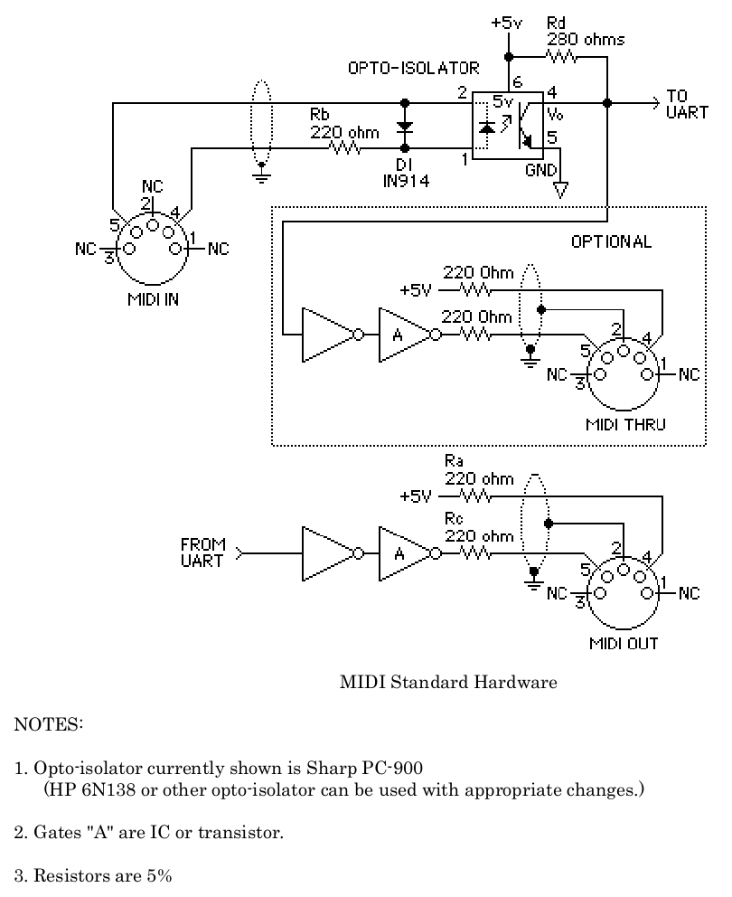
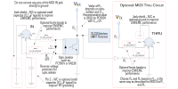
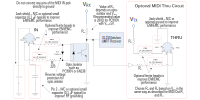

MIDI hardware
The MIDI hardware link is just a 5mA current loop that asynchronously sends and receives 8-bit bytes at a baud rate of 31250
symbols per second. This means that the Arduino's hardware UART can be used for transmitting and receiving MIDI. DIN
5 pin (180 degree) female receptacles are used for MIDI in, out and through connectors.
This is the original schematic that can be found in the 1996 MIDI 1.0 Detailed Specification 4.2:

The current loop consists of a an open collector output on the transmitting end (MIDI out and MIDI through), and an opto-isolator at the receiving end (MIDI in). When a 'zero' is sent, the open collector output sinks current, turning on the LED of the opto-isolator. This will in turn bring low the open collector output of the opto-isolator, resulting in a low signal.
The reason for using a current loop instead of a voltage, is that the sender and the receiver can be at different potentials, because everything is galvanically isolated. This also prevents ground loops, which can result in noise.
Note that the ground and shielding (pin 2 on the 5-pin DIN connector) is connected to the ground of the MIDI out and through circuits, but not to the ground of the receiver in the MIDI in circuit.
The current loop consists of a an open collector output on the transmitting end (MIDI out and MIDI through), and an opto-isolator at the receiving end (MIDI in). When a 'zero' is sent, the open collector output sinks current, turning on the LED of the opto-isolator. This will in turn bring low the open collector output of the opto-isolator, resulting in a low signal.
The reason for using a current loop instead of a voltage, is that the sender and the receiver can be at different potentials, because everything is galvanically isolated. This also prevents ground loops, which can result in noise.
Note that the ground and shielding (pin 2 on the 5-pin DIN connector) is connected to the ground of the MIDI out and through circuits, but not to the ground of the receiver in the MIDI in circuit.
The standard was updated in 2014 to include specifications for 3.3V MIDI devices.
( MIDI 1.0 Electrical Specification Update (CA-033) (2014). MMA Technical Standards Board / AMEI MIDI Committee.) 
( MIDI 1.0 Electrical Specification Update (CA-033) (2014). MMA Technical Standards Board / AMEI MIDI Committee.) 